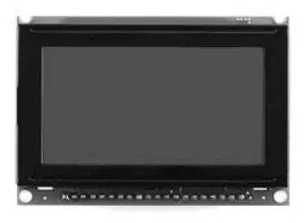

Graphic LCD modules are larger and more expensive than character modules, but they’re also more versatile. You can use them not only to display text but also to draw lines, dots, circles, and more to create visual effects. The graphic LCD used in this book is a 128-by-64-pixel module with a KS0108B-compatible interface, as shown in Figure 7-8.

As with the character LCD, the graphic LCD’s trimpot has a value of 10 kΩ and is used to adjust the display contrast. The header pins are soldered to the row of holes along the bottom of the LCD to make insertion into a breadboard more convenient, with the holes numbered 1 through 20. The pin closest to the corner of the module is pin 1.
Connecting the Graphic LCD
Before you can use the graphic LCD, you’ll need to connect 20 wires between the LCD and the Arduino. Make the connections as shown in Table 7-1.
| LCD Pin Number | To Arduino Pin | LCD Pin Function |
|---|---|---|
| 1 | 5 V | VDD |
| 2 | GND | VSS (GND) |
| 3 | Center of 10 kΩ trimpot | VO (Contrast) |
| 4 | D8 | DB0 |
| 5 | D9 | DB1 |
| 6 | D10 | DB2 |
| 7 | D11 | DB3 |
| 8 | D4 | DB4 |
| 9 | D5 | DB5 |
| 10 | D6 | DB6 |
| 11 | D7 | DB7 |
| 12 | A0 | CS2 |
| 13 | A1 | CS1 |
| 14 | RST | /RESET |
| 15 | A2 | R/W |
| 16 | A3 | D/I |
| 17 | A4 | E |
| 18 | Outer leg of trimpot, other trimpot leg to 5 V | VEE (trimpot voltage) |
| 19 | 5 V through a 22 Ω resistor | LED backlight anode (+) |
| 20 | GND | LED backlight cathode (−) |
Using the LCD
After the LCD is wired up, you can download and install the Arduino library for the graphic LCD module. Download the latest version of the library from http://code.google.com/p/glcd-arduino/downloads/list/ and install it in the same manner described in “Expanding Sketches with Libraries” on page 169.
Now, to use the LCD, insert the following before the void setup():
#include <glcd.h> // include the graphics LCD library
#include "fonts/SystemFont5x7.h" // include the standard character fonts for itThen, after void setup(), add the following lines to prepare the display:
GLCD.Init(NON_INVERTED); // use INVERTED to invert pixels being on or off
GLCD.SelectFont(System5x7); // choose a font for use on the display
GLCD.ClearScreen(); // clear the LCD screenControlling the Display
The graphic LCD’s display will show up to eight rows of 20 characters of text. To position the text cursor, enter the following, replacing the x and y with actual coordinates:
GLCD.CursorTo( x , y );To display particular text, replace text in the following example with the text you want to display:
GLCD.Puts(" text ");To display an integer, use the following code, replacing number with the number you want to display:
GLCD.PrintNumber( number );